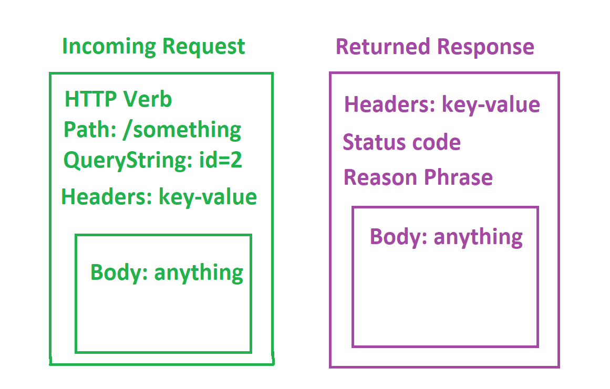

Introductory Web Developement
Zaid Ajaj
### Table of Contents
- The Internet
- Web Servers
- Client Vs. Server
- HTTP
- Requests and Responses
- Building Web Applications
- Todo List App (Flask, Python, CRUD and Security)
The Internet: a network of computers
Communication takes a long route
Web servers LISTENS for incoming requests
Web Servers:
- listen for incoming network requests
- process them (if this do that)
- return response back to network
Servers handle multiple clients at the same time
Your server can be a client too
Classic 3-Tier Layer Application
Everything is a Request and Response
